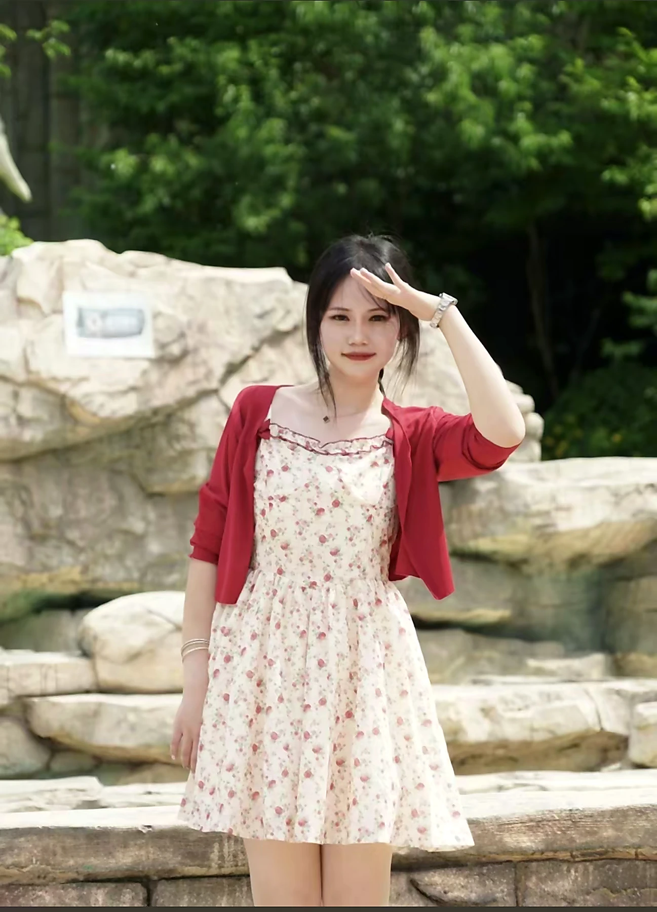
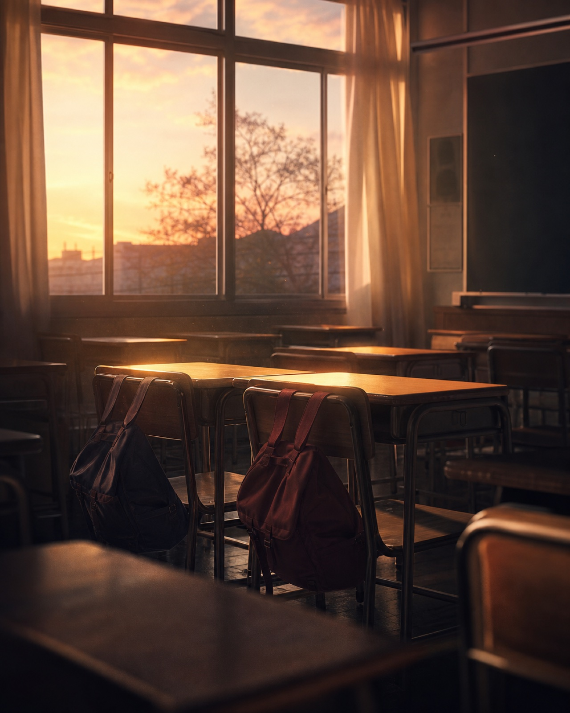
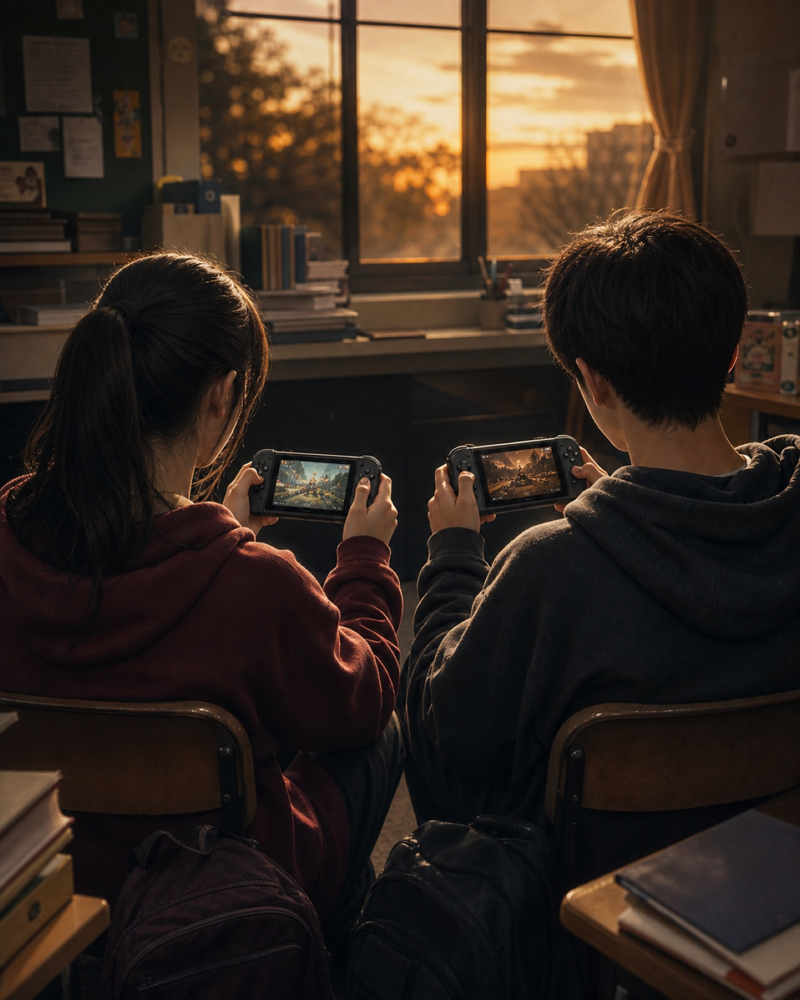
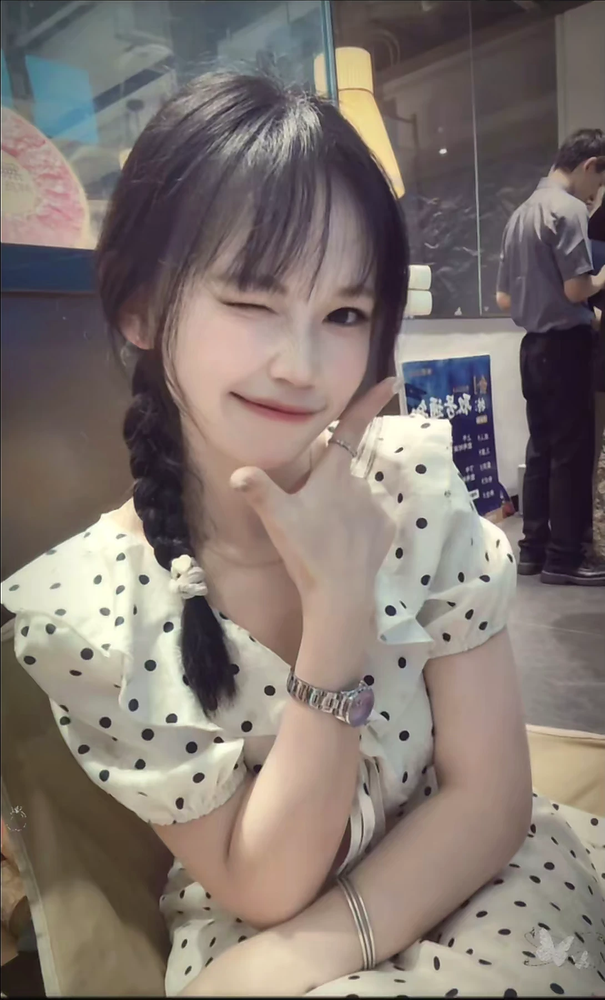
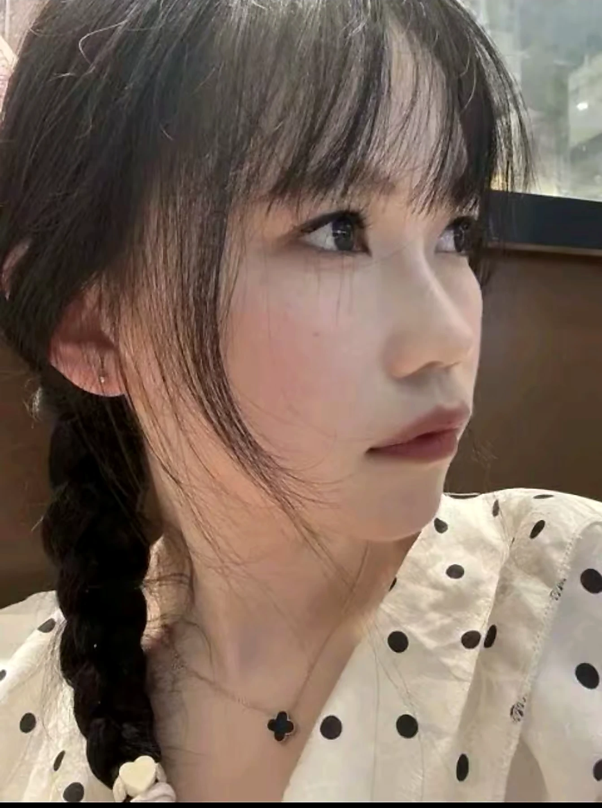
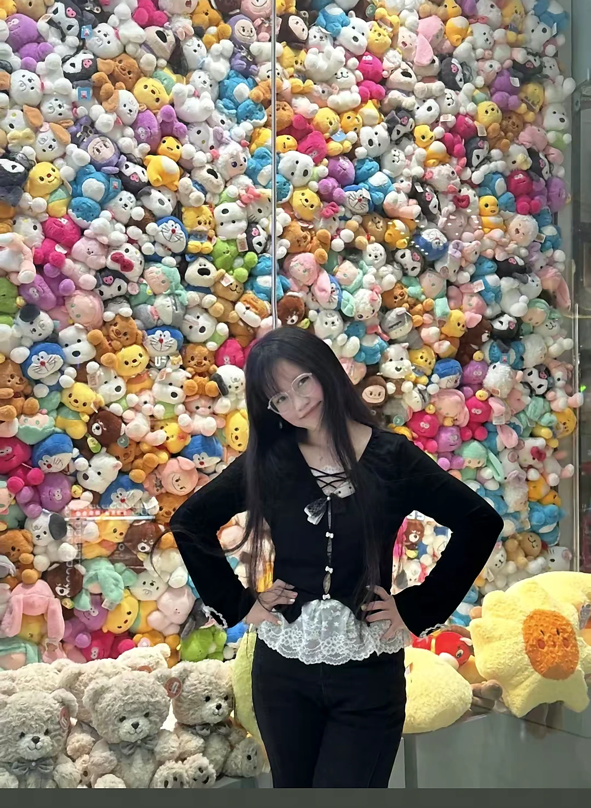
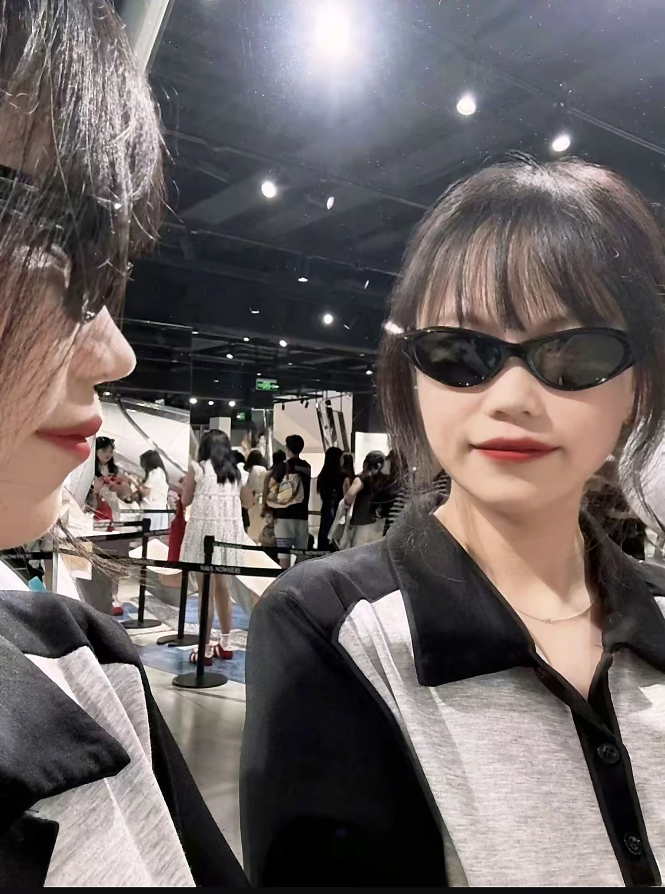
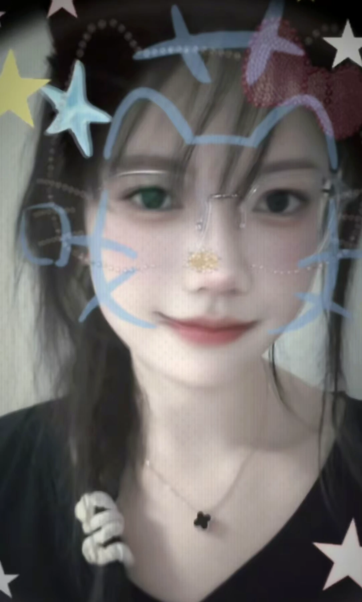

01
我一直记得，
你第一次为我过生日。
正在放映一段只属于你的影像
A STORY WRITTEN BY TIME · 2019—2026
有些故事没有刻意写下，
却被时间一页页保存。
2019—2026
A FILM FOR FXY · 2026
认识你已经七年了。
有些话平时好像不会特意说，
那就趁今天，好好祝你一次：生日快乐。
PROLOGUE · WHERE THE DREAM BEGAN
不是某个盛大的瞬间，
只是高中教室、放学以后，
和一局又一局一起玩过的游戏。

梦开始的教室

一起玩过的游戏
后来走向不同的远方
我们当时不会知道，
这段看似普通的相识，
会被时间认真地保存七年。
CHAPTER I · THE DAYS WE PLAYED
一起打游戏，一起玩，
输赢都能吵闹半天。
那时也没想过几年以后，
这些小事还会记得这么清楚。
后来毕业，我们各奔东西，
生活也开始有了不同的地图。
PORTRAITS OF FXY · IN THIS MOMENT
这些照片属于现在。
旁边的话，属于我们认识的七年。

我一直记得，
你第一次为我过生日。

你记得我的生日时间。
那份认真，让我感动了很久。

后来虽然不常见面，
偶尔聊起来，还是熟悉的老同学。

生活不只有一种正确答案。
你很早就开始为自己努力。

白班、夜班交替，
我知道你一个人也很拼。

成绩和别人定义的路，
从来不能决定一个人的好。
CHAPTER II · WHAT I WANT TO SAY
我知道你这些年过得不算轻松，
你会记得朋友的生日，
也一直认真工作、认真过自己的生活。
这些事，我都记得。
好朋友不用每天联系。
隔一阵子再聊，也还是能接上以前的话。
CHAPTER III · MAKE A WISH
愿这一刻的烛光，也能照亮新一岁的每一天。
THE LAST SCENE · FOR YOU
TO FXY · ON YOUR BIRTHDAY
七年不算短。我们从高中一起打游戏、一起玩，到后来各自走进不同的生活。联系没有从前那么频繁，但我一直记得，你第一次给我过生日，也一直记得我的生日时间。
后来你更早地走进社会，一个人工作，白班夜班交替。也许学习从来不是你最擅长的事，可成绩和别人定义的那条路，从来不能说明一个人的全部。
在我看来，你善良、认真，也一直在努力生活。你真的是一个很好很好的女孩，也是我很珍惜的朋友。
新的一岁，希望你工作顺利，白班夜班别太累，也多给自己留一点休息和开心的时间。继续做自己想做的事，生日也要好好过。
—— 认识你七年的高中同学